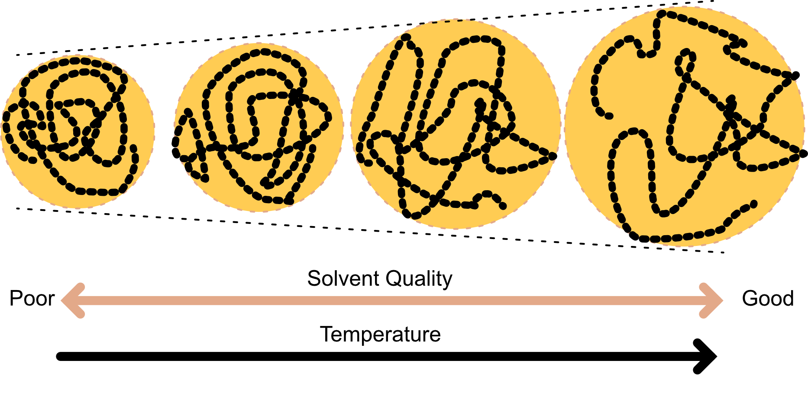

Complex Disordered Systems
Polymers and solvents
Today
- Good, poor and theta solvents
- Concentrated polymer solutions
Polymers in solvents
Polymers typically are dispersed in a medium (solvent).
Solvent-polymer attractions (the affinity) influences the polymer conformations:
- good solvents \to high affinity \to the polymer swells (expands)
- poor solvents \to low affinity \to the polymer shrinks
The affinity depends on the details of the molecular interactions but can be coarse-grained.
We can construct a simple model with effective interaction energies
\varepsilon_{s s} for the solvent-solvent
\varepsilon_{\mathrm{pp}} for monomer-monomer
\varepsilon_{s p} for solvent-monomer interactions.
Energy of mixing
On-lattice model:
- each site has z nearest neighbours
- N_{s} solvent molecules
- N_{p} monomers
- \mathrm{N}_{\mathrm{sp}} solvent-monomer contacts.
Effective interactions:
- \varepsilon_{s s} for the solvent-solvent
- \varepsilon_{\mathrm{pp}} for monomer-monomer
- \varepsilon_{s p} for solvent-monomer interactions.
Then the energy of mixing \Delta U_{\operatorname{mix}} is obtained as the difference between the total energy U of the mixed system and the sum of the energies of the pure solvent and pure polymer, U_{S}+U_{p}.
\Delta U_{\operatorname{mix}}=U-\left(U_{S}+U_{p}\right)
Energy of mixing
Energy of solution U=N_{s p} \varepsilon_{s p}+\dfrac{\left(z N_{s}-N_{s p}\right) \varepsilon_{s s}}{2}+\dfrac{\left(z N_{p}-N_{s p}\right) \varepsilon_{p p}}{2}
We obtain that the energy of mixing \Delta U_{\mathrm{mix}}=N_{s p}\left[\varepsilon_{s p}-\dfrac{1}{2}\left(\varepsilon_{s s}+\varepsilon_{p p}\right)\right]
which can change sign depending on our choices for the effective interaction energies.
Good solvents, poor solvents and theta solvents
- Good solvent: \varepsilon_{s p}<\frac{1}{2}\left(\varepsilon_{s s}+\varepsilon_{p p}\right) \quad \therefore \Delta \mathrm{U}_{\text {mix }}<0
This is the case of a ‘good solvent’, because the monomers prefer to be near the solvent molecules. Excluded volume effects then expand the chain.
- Poor solvent: \varepsilon_{s p}>\frac{1}{2}\left(\varepsilon_{s s}+\varepsilon_{p p}\right) \quad \therefore \Delta \mathrm{U}_{\text {mix }}>0
The attraction between the different monomers offset the excluded volume effect making the polymer collapse.
- Tuning solvent properties (e.g. the temperature) leads to conformational changes
Temperature dependence and theta (\Theta) solvents
The various affinities have temperature dependencies. Typically:
At high T, the coil expand and the solvent is good
At low T the coil collapses and phase separation is observed (polymer-rich from polymer-poor phase)
There is an intermediate temperature where the excluded volume and attractive interaction compensate each other and allow for the polymer to behave like an ideal chain (freely jointed chain).
- The temperature is conventionally named \Theta temperature (or Flory temperature, after physicist Paul Flory)
- The \Theta temperature increases wth the solvent-polymer attractions (we need higher temperature to reach ideal behaviour)
Swelling behaviour of polymers in solvent.
Examples
We will see gelation in a few sessions.
Concentrated polymer solutions
As we vary the concentration the behavior qualitatively changes.
We will increase the concentration in steps to reach bulk polymers
Dilute regime
where N_A is Avogadro’s number, M is the molar mass of a single chain and R_g is the radius of gyration of the chain.
Essentially, the polymers do not overlap.
Overlap concentration c*
Overlap occurs when the volume fraction of coils reaches unity and thus
\frac{c^{*}}{M} N_{A} \frac{4 \pi}{3} R_{g}^{3} \sim 1 \quad \therefore c^{*}=\frac{3 M}{4 \pi N_{A} R_{g}^{3}}
Phenomenologically one has R g=\langle R_g^2\rangle^{1 / 2}=B M^{\nu} with an empirical exponent called the Flory scaling exponent. Hence
c^{*}=\frac{3}{4 \pi N_{A} B^{3}} M^{1-3 v}
Overlap concentration c*
c^{*}=\frac{3}{4 \pi N_{A} B^{3}} M^{1-3 v}
Example of polystyrene in a good solvent:
| Molar mass (M) |
10^{6} |
g mol^{-1} |
| Flory exponent (ν) |
0.6 |
|
| Kuhn length (B) |
0.028 |
nm (g mol^{-1})^{-0.6} |
| Overlap concentration (c*) |
0.29 |
kg m^{-3} (or 0.29 mg/ml) |
| Polystyrene density (ρ) |
1050 |
kg m^{-3} |
| Volume fraction of monomers |
0.28 \times 10^{-3} |
|
For large polymers, c^* can be very small.
Semi-dilute
The concentration is larger than the overlap concentration \mathrm{c}^{*}, but still much smaller than the bulk density.
The coils interpenetrate and entanglement begins
Change in the dynamics (slowing down)
Yet, the solution is still mostly solvent.
Start of the formation of a polymer network with transient crowded regions within the solvent.
Polymer entanglement
- Polymer entanglement occurs when overlapping polymer chains become topologically intertwined, creating temporary physical knots that restrict chain motion and significantly affect the material’s mechanical and rheological properties.
- Introduces topological constraints (transient/permanent)
Concentrated: bulk polymers
- Polymer concentration approaches bulk density
- Monomers occupy significant fraction of total volume
- Highly interpenetrated coils form continuous network
- Polymer-polymer interactions dominate over polymer-solvent interactions
- Chain entanglements restrict segment motion
- Transition from solution-like to solid-like behavior
- Increased mechanical strength and viscosity
- Complex dynamics due to crowding effects
These are the feature of density-driven glassy behaviour.
Cross-linking
Cross-linking is the process of forming covalent bonds between separate polymer chains, creating a three-dimensional network structure. These bonds:
- Connect different chains at specific points
- Restrict chain movement and deformation
- Increase mechanical strength and rigidity
- Can be temporary (reversible) or permanent (irreversible)
- Determine material properties: low cross-linking allows flexibility, high cross-linking creates brittleness
Bulk polymer classes
Two main classes of bulk polymers, characterised by whether they are cross-linked or not.
- Elastomers (rubbers): low cross-linking → flexible and elastic (stretch and return to original shape)
- Thermosets: high cross-linking → rigid, hard, brittle network
- Thermoplastics: no cross-linking → most everyday plastics; behavior upon cooling shows similarities to colloids
Polymer bulks are often referred to as resins.
Examples of bulk polymer classes
| Elastomers |
Natural rubber, silicone rubber, neoprene |
Flexible, elastic, low cross-linking |
Tires, seals, gaskets, flexible tubing |
| Thermosets |
Epoxy resins, phenolic resins, polyurethane foam |
Rigid, hard, high cross-linking, irreversible |
Circuit boards, adhesives, insulation, structural composites |
| Thermoplastics |
Polyethylene (PE), polypropylene (PP), PET, polystyrene (PS), PVC |
Recyclable, moldable upon heating, no cross-linking |
Packaging, bottles, pipes, automotive parts, consumer products |

Natural rubber, epoxy substrate for circuits, PET used in plastic bottles
Thermoplastics behaviour upon cooling
- At high temperature the free energy is dominated by entropy.
- random assembly of intertwined flexible coils
- Upon cooling, potential energy dominates and chain rotation becomes restricted, favoring more extended configurations.
- Below melting temperature T_m, crystals form (lowest free energy state), but require slow cooling and significant molecular ordering.
- Rapid cooling below glass transition temperature T_g (< T_m) prevents crystallization, forming an amorphous glassy state instead—a metastable, long-lived solid.
- Solid thermoplastics typically contain a mixture of crystalline and amorphous regions.